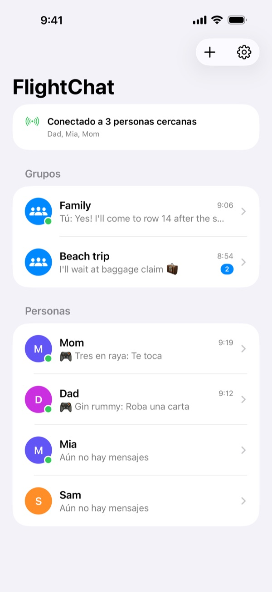
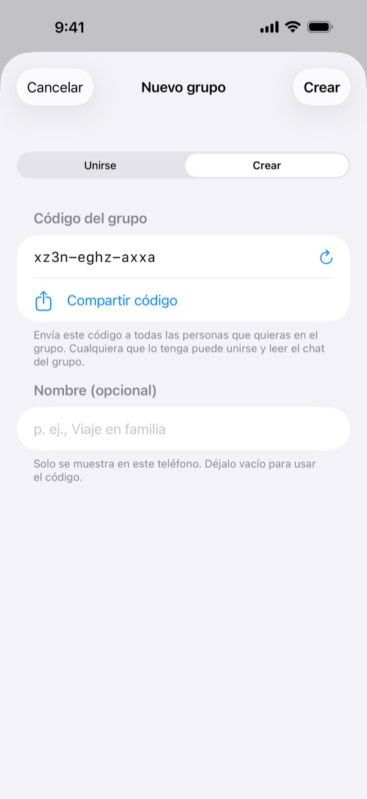
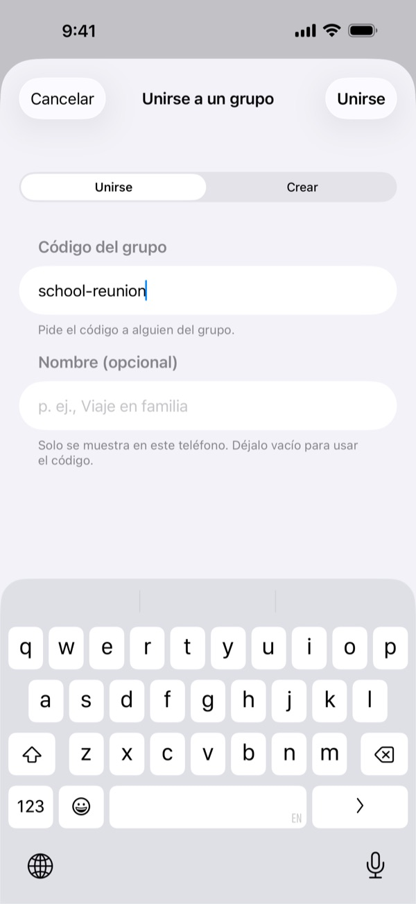
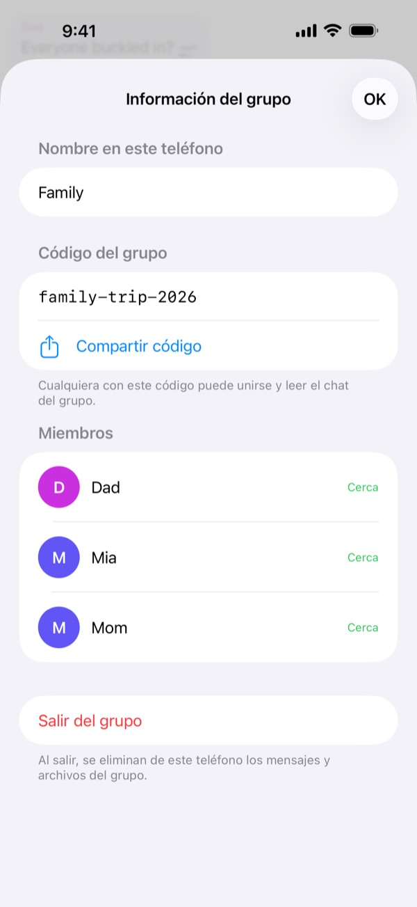
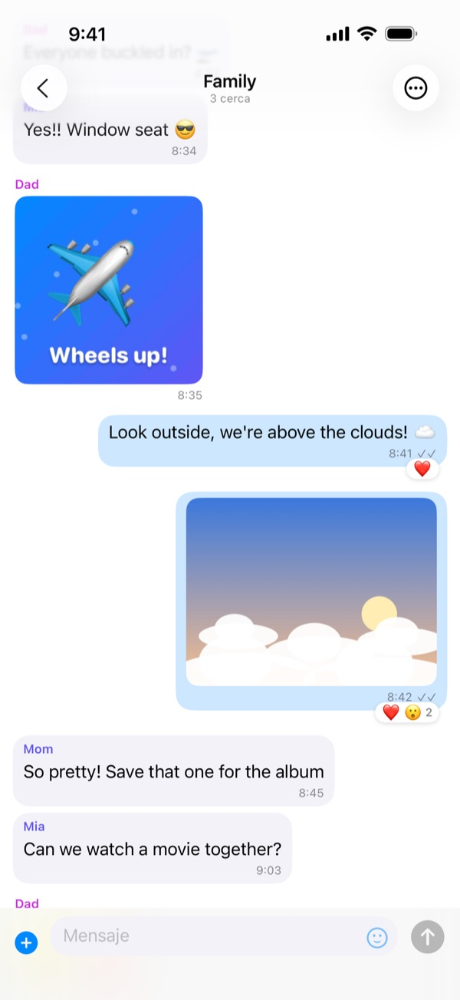
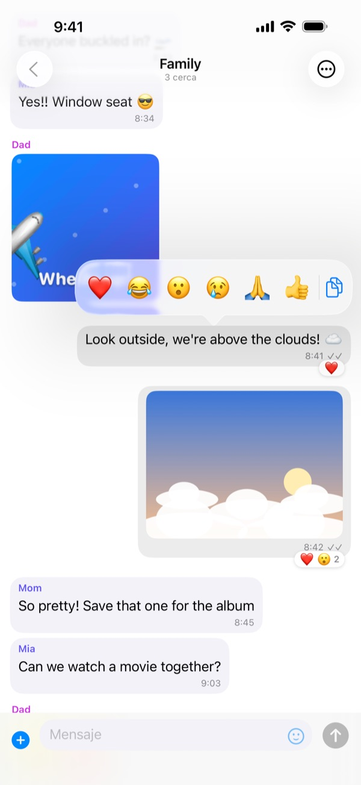
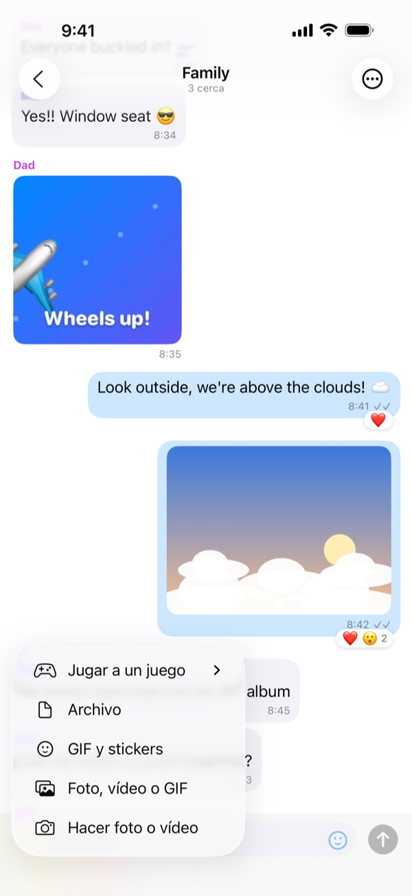
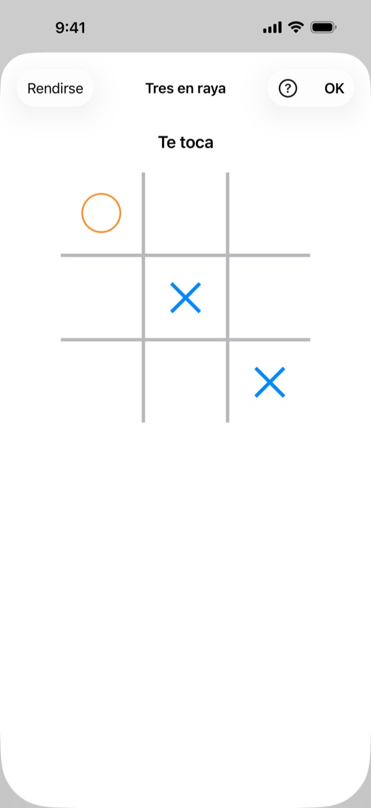
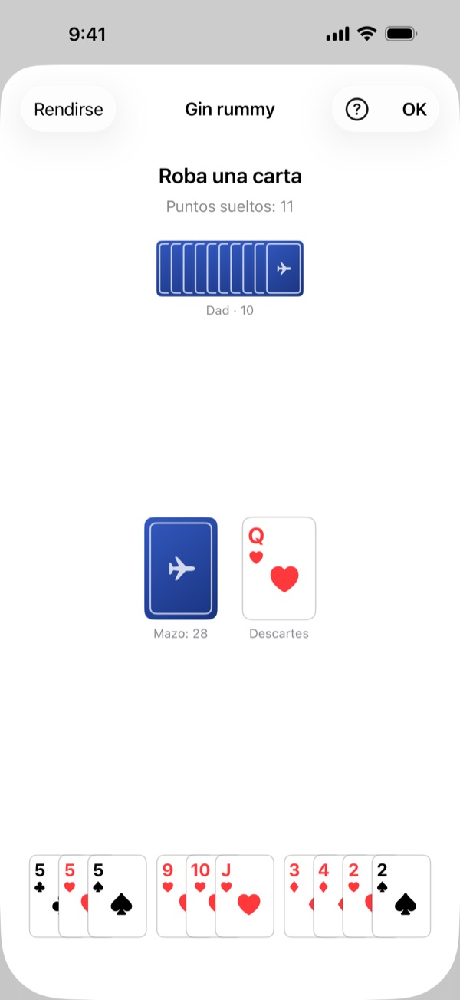
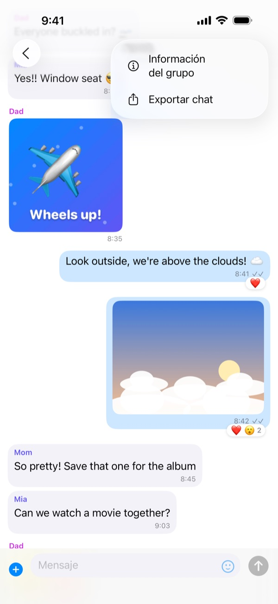

Antes de volar
Prepáralo todo mientras estáis juntos en casa o en la puerta de embarque:
- Instala FlightChat en todos los teléfonos del grupo.
- Una persona crea un grupo y comparte su código con los demás, por ejemplo en un mensaje.
- Los demás se unen al grupo con ese código.
- Envía un mensaje de prueba y comprueba que todos lo reciben.
La primera vez que abras FlightChat, permite que busque dispositivos en tu red local. Sin esto no puede encontrar a tu grupo.
En el avión
- Activa el modo Avión como siempre.
- Abre el centro de control y vuelve a activar el Wi-Fi y el Bluetooth. No hace falta conectarse a ninguna red.
- Abre FlightChat. En la parte superior de la lista de chats verás quién está conectado.
Los teléfonos solo se conectan mientras FlightChat está abierto. Cuando vuelves a la app, se reconectan solos y recuperan lo que se perdieron.

Grupos
Un grupo es un chat compartido para todos los que escriben el mismo código. Puedes estar en hasta 10 grupos a la vez, por ejemplo uno para tu familia y otro para amigos del mismo vuelo, y seguir conectado a todos.
Crear un grupo
- En la lista de chats, toca + y luego Crear.
- FlightChat inventa un código difícil de adivinar. Ponle nombre al grupo si quieres.
- Toca Compartir código para enviárselo a los demás y luego toca Crear. También puedes compartirlo más tarde desde Información del grupo.
Unirse a un grupo
Toca +, luego Unirse, y escribe el código que te dieron. Da igual si usas mayúsculas.
Cambiar el nombre, compartir o salir de un grupo
Abre el chat del grupo, toca ⋯ y luego Información del grupo. Ahí puedes cambiar cómo se llama el grupo en tu teléfono, ver y compartir su código, ver sus miembros o salir. Al salir de un grupo se eliminan sus mensajes y archivos de tu teléfono.
No compartas los códigos con desconocidos. Cualquiera con el código puede unirse al grupo y leer su chat.



Chatear
- Chats de grupo e individuales: cada grupo tiene su propio chat. Personas muestra a todos con quienes compartes un grupo. Para escribir en privado a alguien, toca su nombre.
- Fotos, vídeos, GIF y archivos: toca + junto al campo de mensaje. Elige Hacer foto o vídeo para usar la cámara (vídeos de hasta 2 minutos) o elige algo que ya tengas. Toca la carita para stickers y GIF.
- Reacciones: mantén pulsado un mensaje y elige un emoji. Desde ahí también puedes copiar el texto.
- Pantalla completa: toca una foto o un vídeo. Gira el teléfono para verlo más grande. Usa el botón de compartir para guardarlo.
- Marcas: ✓ significa que el mensaje se guardó y se envió a quienes estén conectados. ✓✓ significa que todos sus destinatarios lo tienen.
- ¿No está cerca? Los mensajes a personas no conectadas se envían cuando os volvéis a conectar.



Juegos
Juega una partida rápida con alguien en un chat individual: toca +, luego Jugar a un juego, y elige uno. Aparece una tarjeta del juego en el chat para los dos; tócala para jugar. Al terminar, toca Revancha para volver a jugar, empezando la otra persona. Si ya hay una partida de ese juego en curso en el chat, al elegirlo de nuevo se abre esa partida.
- Tres en raya: colocad ✕ y ◯ por turnos. Tres en línea gana.
- Cuatro en raya: soltad fichas en una columna por turnos. Cuatro en línea, en horizontal, vertical o diagonal, gana.
- Piedra, papel o tijera: los dos elegís a la vez. Ningún teléfono ve lo que eligió el otro hasta que los dos hayáis elegido.
Las partidas solo van al otro jugador. Si uno de los dos se aleja, la partida espera y continúa cuando los teléfonos vuelvan a conectarse.

Juegos de cartas
Los juegos de cartas empiezan igual: + y luego Jugar a un juego. La baraja se mezcla al empezar y cada uno ve solo su propia mano, en la parte inferior de la pantalla. Toca el mazo para robar y toca una carta para jugarla; las cartas que puedes jugar aparecen levantadas.
- Guerra: cada uno da la vuelta a su carta de arriba y la más alta se lleva las dos (el as es la más alta). Si empatan, el ganador de la siguiente ronda se las lleva también. Tras 26 rondas, gana quien haya ganado más cartas.
- Ocho loco: siete cartas cada uno. Juega una carta del mismo palo o número que la de arriba del montón, o roba. Los ochos valen sobre cualquier carta y te dejan elegir el palo que sigue. Gana quien se quede antes sin cartas.
- Gin rummy: diez cartas cada uno. En tu turno, roba del mazo o de los descartes y luego descarta. Forma combinaciones: tres o cuatro cartas del mismo número, o tres o más seguidas del mismo palo. Con 10 puntos sueltos o menos puedes cerrar la mano; sin ninguno, es gin.
- Juegos de grupo para 3 o 4: en un chat de grupo, toca +, luego Jugar a un juego, y elige Ocho loco o Gin rummy. Elige 2 o 3 personas (las que están cerca ya aparecen marcadas) y toca Repartir. Se juega por turnos. En Ocho loco cada uno recibe 5 cartas; en gin rummy, 10 cada uno con tres jugadores y 7 con cuatro, y cuando alguien cierra, los demás colocan sus cartas y cuentan. Todo el grupo ve la partida, pero solo los jugadores reciben cartas y nadie ve la mano de los demás.
Tu mano solo aparece en tu teléfono; el otro jugador ve cuántas cartas tienes, no cuáles. Al final del gin rummy se muestran las dos manos para que podáis comprobar la puntuación.

Cómo jugar
Las reglas de cada juego de FlightChat. En una partida, toca Cómo jugar para ir directamente a sus reglas.
Tres en raya
- Dos jugadores juegan por turnos en una cuadrícula de 3 × 3. Quien empieza usa ✕; el otro, ◯.
- En tu turno, toca una casilla vacía para poner tu símbolo.
- Pon tres de tus símbolos en línea, en horizontal, vertical o diagonal, para ganar. Si la cuadrícula se llena antes, es empate.
Cuatro en raya
- Dos jugadores sueltan fichas por turnos en un tablero de 7 columnas y 6 filas. Quien empieza usa las rojas; el otro, las amarillas.
- En tu turno, toca una columna: tu ficha cae al hueco libre más bajo. Una columna llena no admite más fichas.
- Pon cuatro de tus fichas en línea, en horizontal, vertical o diagonal, para ganar. Si el tablero se llena antes, es empate.
Piedra, papel o tijera
- Los dos jugadores eligen piedra, papel o tijera a la vez.
- La piedra gana a la tijera, la tijera al papel y el papel a la piedra. La misma elección en los dos lados es empate.
- Tu elección queda sellada hasta que el otro jugador también elija, así que ninguno puede ver primero lo que eligió el otro.
Guerra
- La baraja se mezcla y se reparte en dos: 26 cartas cada uno, boca abajo.
- En cada ronda, los dos jugadores dan la vuelta a su carta de arriba, y la más alta se lleva las dos. El as es la más alta, luego el rey, la reina, la jota y del 10 al 2.
- Si las dos cartas tienen el mismo valor, se quedan en el centro y el ganador de la siguiente ronda se las lleva también.
- Tras 26 rondas, gana quien haya ganado más cartas.
Ocho loco
- Con dos jugadores, cada uno recibe 7 cartas; con tres o cuatro (en un chat de grupo), 5 cada uno. Se da la vuelta a una carta para empezar el montón, y el resto forma el mazo.
- En tu turno, juega una carta del mismo palo o número que la de arriba del montón, o roba una del mazo. Puedes robar todas las que quieras antes de jugar.
- Los ochos son comodines: juega uno sobre cualquier carta y elige el palo que debe seguir el siguiente jugador.
- Si no puedes jugar y el mazo está vacío, toca Pasar.
- Gana quien se quede antes sin cartas. Si ya nadie puede jugar, gana la puntuación más baja en mano: los ochos valen 50, las figuras 10, los ases 1 y las demás su número.
Gin rummy
- Cada jugador recibe 10 cartas (7 cada uno si juegan cuatro en un chat de grupo). Una carta empieza el montón de descartes, y el resto forma el mazo.
- En tu turno, toma la carta de arriba del mazo o de los descartes y luego descarta una. No puedes devolver la carta que acabas de tomar de los descartes.
- Forma combinaciones: tres o cuatro cartas del mismo número (7♣ 7♥ 7♠), o tres o más seguidas del mismo palo (4♥ 5♥ 6♥). El as es la carta más baja. FlightChat agrupa tus combinaciones por ti.
- Las cartas fuera de una combinación son puntos sueltos: el as vale 1, las cartas numeradas su número y las figuras 10. Tu total aparece como Puntos sueltos.
- Cuando tus puntos sueltos sean 10 o menos tras descartar, puedes cerrar para terminar la mano; si no tienes ninguno, es gin. Los demás jugadores añaden entonces las cartas que puedan a las combinaciones de quien cerró (no tras un gin).
- Puntuación: quien cierra gana la diferencia de puntos sueltos con cada uno de los demás. El gin suma los puntos sueltos de todos más 25. Quien tenga tantos puntos sueltos o menos que quien cerró le contraataca y gana la diferencia más 25. Si al mazo le quedan 2 cartas, la mano es empate.
Exportar un chat
Abre el chat, toca ⋯ y luego Exportar chat. FlightChat crea un archivo ZIP con la conversación en texto y las fotos, vídeos y archivos que hay en tu teléfono. Guárdalo en Archivos, envíalo por AirDrop o por correo cuando vuelvas a tener conexión.

Bloquear y denunciar
- En un chat individual: toca ⋯ y luego Bloquear o denunciar.
- En un chat de grupo: mantén pulsado su mensaje y toca la mano.
- Dejas de ver sus mensajes y no puede escribirte. No se le avisa.
- Denunciar y bloquear también nos envía una denuncia por correo. Respondemos en menos de 24 horas.
- Desbloquea a personas en Ajustes → Personas bloqueadas.
Alguien a quien has bloqueado y que tiene el código del grupo aún puede leer el chat del grupo. Para quitarle por completo, acordad un grupo nuevo con los demás y salid del anterior.
Si no te sientes seguro a bordo, avisa enseguida a un miembro de la tripulación.
Si los teléfonos no se conectan
- Comprueba que el Wi-Fi y el Bluetooth estén activados en el centro de control. El modo Avión los desactiva.
- Mantén FlightChat abierto en ambos teléfonos.
- Comprueba que estáis en el mismo grupo: abre el chat del grupo, toca ⋯, luego Información del grupo, y compara los códigos.
- En la app Ajustes del iPhone, abre FlightChat y asegúrate de que Red local esté activada.
- Acercaos. Los teléfonos a pocas filas de distancia suelen conectarse; en el otro extremo de un avión grande puede que no.
- ¿Acabas de unirte a un grupo? Los teléfonos que ya están en él te encuentran en unos segundos.
- Pueden conectarse entre sí hasta 8 teléfonos a la vez, incluido el tuyo.
Idiomas
FlightChat usa el idioma de tu iPhone: inglés, francés, español, chino, japonés, hebreo, coreano o árabe. El hebreo y el árabe se leen de derecha a izquierda. Los mensajes, los nombres y los stickers siempre aparecen tal como se enviaron. Para elegir un idioma solo para FlightChat, toca el engranaje de la lista de chats, elige un Idioma, toca Guardar y luego cierra y vuelve a abrir FlightChat. También puedes elegirlo en la app Ajustes del iPhone, en Apps → FlightChat → Idioma.
Tus datos
Tus mensajes se quedan en tu teléfono y en los de tus grupos. No hay cuentas ni servidores. Para borrarlo todo, abre Ajustes y toca Borrar historial de chats. Consulta la Política de privacidad y los Términos de uso (en inglés) para más detalles.
Contacto
¿Algo no funciona o tienes una pregunta? Escribe a biomass-65-jumbo@icloud.com.